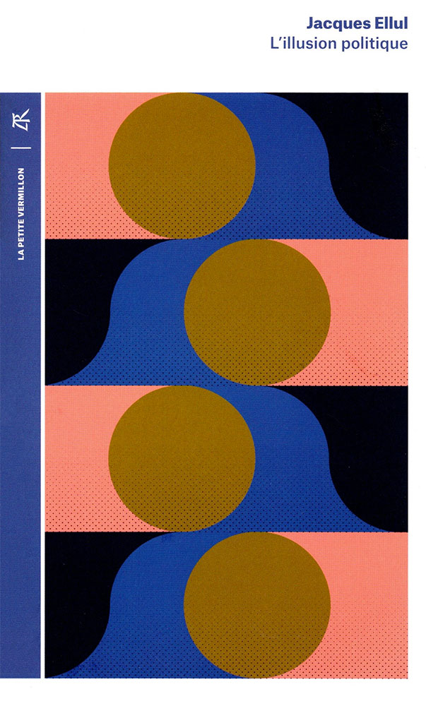

1:05:53 · 7 OPERE
L'illusione politica o la politica dell'illusione?
Il filo del discorso
Il relatore interroga la distanza tra partecipazione politica e possibilità effettiva di incidere sulle decisioni. La premessa rifiuta una spiegazione monolitica del presente: non basta individuare un unico centro onnipotente o attendere la sconfitta di un solo avversario. Il discorso passa dalle elezioni italiane del settembre 2022 alla guerra, alla formazione e all’industria culturale, sostenendo che il voto non esaurisca la vita politica. Le accuse a governi, giornalisti e istituzioni rimangono giudizi del relatore, distinti dalla verifica di singoli fatti. L’illusion politique di Jacques Ellul è il riferimento centrale. Il relatore ne legge stralci sul controllo dello Stato e sul tempo necessario a un cittadino informato. Il contesto originale del capitolo IV richiede però attenzione: Ellul espone dapprima l’idea corrente che istruzione e impegno consentano al cittadino di dominare lo Stato, poi la critica come inadeguata alla complessità degli apparati. Non va ridotto a un invito a informarsi e votare con maggiore convinzione. Il libro uscì nel 1965, con deposito legale nel 1964. Kant accompagna l’appello a usare il proprio intelletto; Hillel apre il problema del rapporto tra interesse personale e responsabilità verso altri; Schmitt introduce la divisione fra amico e nemico. La sovranità popolare viene discussa attraverso la Costituzione italiana, il cui testo mantiene forme e limiti del suo esercizio. Anche la critica della guerra va distinta dall’affermazione che qualsiasi assistenza all’Ucraina sia automaticamente illegale. La digressione su Truss ricorre a un’iperbole: una dichiarazione sulle responsabilità nucleari del primo ministro non costituisce una richiesta di lancio immediato. La seconda parte collega partecipazione, educazione e persuasione. Il relatore insiste sul bisogno di tempo, dati e strumenti per comprendere, richiamando Atene e poi Bernays, Freud e Alice Miller. I nomi non permettono di inventare titoli non citati. Le percentuali sull’inconscio e le generalizzazioni sul trauma non sono assunte come dati scientifici o diagnosi. Analogamente, una pandemia non richiede morti visibili ovunque o malattia universale: la percezione individuale non sostituisce le fonti epidemiologiche. Il percorso si chiude con Il marchese del Grillo, un documentario Netflix su Wanna Marchi e Stefania Nobile probabilmente identificabile con Wanna, e il rapporto tra mezzo e messaggio evocato attraverso McLuhan. La televendita diventa, nell’analogia del relatore, un caso per pensare la persuasione politica. L’accostamento non dimostra che ogni comunicazione sia fraudolenta: la domanda conclusiva riguarda la possibilità di interrompere reazioni automatiche e chiedere ragioni, distinguendo adesione, conoscenza e capacità di agire.
I libri nel discorso

Costituzione della Repubblica Italiana
Copertina dell’edizione Intra aggiornata al 2023: Intra · 2023 · introduzione di Umberto Vincenti
Copertina autentica del testo integrale, aggiornata alla legge costituzionale 26 settembre 2023 n.1. È successiva al filmato del 2019 e non rappresenta la versione storica letta dal relatore. Umberto Vincenti firma l’introduzione. I tentativi di acquisire PDF istituzionali hanno restituito HTTP 403: nessun PDF o frontespizio è simulato come scaricato.
Articolo 11 richiamato discutendo guerra e assistenza all’Ucraina; articolo 1 e sovranità popolare ripresi dal minuto 32. La lettura costituzionale del relatore non equivale a una decisione giuridica di illegittimità.
Passaggio 9:28 ↗ · Fonti e libro ↗
Pirqè Avòt (Massime dei Padri)
Copertina: Copertina Massime dei padri. Pirké Avòt. Con traduzione a fronte, commenti, schede tematiche e racconti, Giuntina, Fuori collana, 2021, illustrazioni di Boris Shapiro, introduzione di Shalom Hazan, prefazione di Riccardo Di Segni, ISBN 9788880579014.
Copertina autentica illustrata con albero, figure di maestri e grande titolo ebraico Pirqè Avòt; immagine intera della scheda ISBN. Il titolo italiano non è sovrapposto artificialmente alla grafica. Hillel è autore della massima citata, non dell’intero trattato; Shapiro è illustratore, non autore antico. L’edizione moderna non viene attribuita al contributo.
Massima di Hillel, se non sono per me chi sarà per me: riscontro Pirqè Avòt 1:14. Il testo comprende anche il limite dell’essere soltanto per sé e la domanda sul quando agire.
Passaggio 13:31 ↗ · Fonti e libro ↗
Il concetto di politico (Der Begriff des Politischen / The Concept of the Political)
Identificazione probabile
Copertina: Testo tedesco nella versione del 1932. Copertina The Concept of the Political, Expanded Edition, University of Chicago Press, 2007, traduzione e introduzione di George Schwab, prefazione di Tracy B. Strong e note di Leo Strauss, 162 pagine, ISBN 9780226738925. È una edizione inglese di riferimento, non una copia identificata nel video.
Immagine autentica dell’opera, controllata visivamente; l’edizione di riferimento non è attribuita al filmato.
Distinzione amico/nemico attribuita esplicitamente a Carl Schmitt. Titolo non pronunciato: identificazione probabile del nucleo teorico de Il concetto di politico.
Passaggio 16:14 ↗ · Fonti e libro ↗
L’illusion politique (L’illusione politica / The Political Illusion)
Copertina di una successiva edizione francese: La Table Ronde, La petite vermillon, edizione 2018, ISBN 9782710388241
Copertina autentica di una riedizione francese del 2018; non prima edizione del 1965 e non edizione identificata nel video. L’immagine ad alta risoluzione del libraio è stata confrontata con quella originale nella scheda editoriale. Non è inventata una traduzione italiana.
Jacques Ellul e L’illusione politica nominati; a 1555 il relatore corregge capitolo quattordicesimo in quarto, dedicato al controllo dello Stato. Stralci ripresi a 1840 e 2633. Prima edizione 1965, deposito legale 1964.
Passaggio 24:30 ↗ · Fonti e libro ↗
Risposta alla domanda: che cos’è l’Illuminismo?
Copertina della raccolta che comprende il saggio sull’Illuminismo: Firenze University Press · Sette scritti politici liberi · 2011 · a cura di Maria Chiara Pievatolo
Copertina del volume cartaceo FUP che comprende il saggio, riscontrato dal catalogo universitario. L’ISBN appartiene alla raccolta; il filmato non annuncia un’edizione e il titolo del saggio è un’identificazione probabile della citazione.
Kant, illuminismo e invito a usare il proprio intelletto senza guida altrui: citazione riconoscibile dell’incipit di Risposta alla domanda: che cos’è l’Illuminismo?, 1784. Il titolo non è detto ma il passo è identificabile testualmente.
Passaggio 24:57 ↗ · Fonti e libro ↗
Il marchese del Grillo
Confezione DVD · edizione restaurata: Immagine della confezione DVD restaurata CG Entertainment, catalogata nel 2025, EAN 8033109395410. Film originale del 1981. Confezione rossa con Alberto Sordi; fotografia quadrata con margini bianchi, non copertina di un libro.
Fotografia della confezione DVD autentica. Il codice è un EAN commerciale audiovisivo, non un ISBN; il video cita il film, non questa edizione home video.
Titolo Il marchese del Grillo esplicitamente nominato e battuta del protagonista richiamata come figura dell’arroganza del potere.
Passaggio 1:01:57 ↗ · Fonti e libro ↗Wanna
Identificazione probabile
Immagine promozionale ufficiale Netflix: Netflix, miniserie documentaria italiana 2022, immagine promozionale del catalogo
Immagine ufficiale Netflix associata al titolo Wanna nel catalogo: illustrazione promozionale orizzontale, non locandina di sala né copertina di libro. Identificazione dell’opera nel video probabile, non titolo ascoltato. Nessuna visione integrale della miniserie viene dichiarata.
Documentario su Netflix dedicato a Wanna Marchi e alla figlia Stefania Nobile; titolo non pronunciato. Il catalogo ufficiale rende probabile Wanna, miniserie 2022 in quattro episodi.
Passaggio 1:02:27 ↗ · Fonti e libro ↗